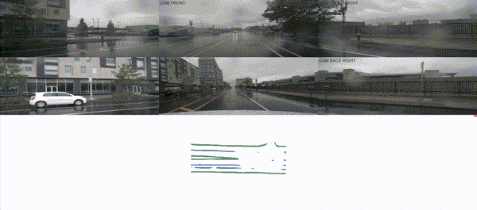
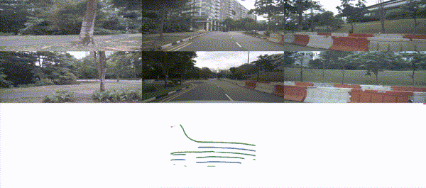
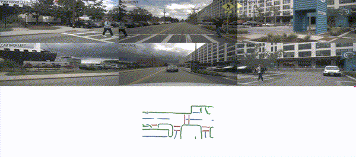
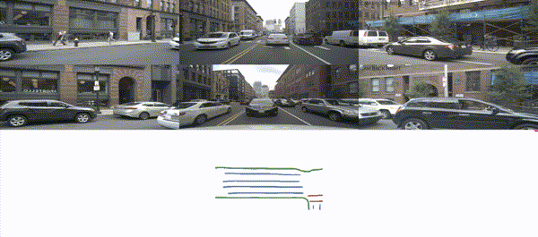
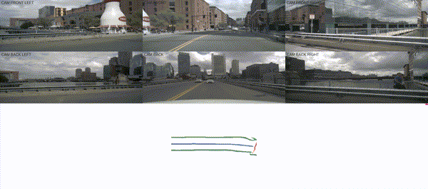
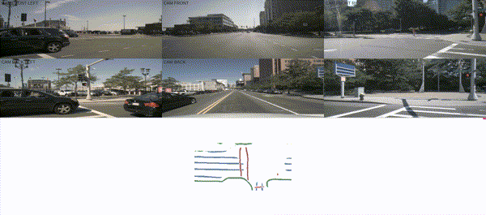

1Tsinghua University,
2MIT,
3Li Auto
Demos
The vectorized HD Map predicted by our model. The red lines indicate lane boundary, the white ones indicate lane divider, and the yellow ones indicate ped crossing. We draw LiDAR point clouds over the map for visualization purpose.
Temporal Map Construction
|  |
 |
|  |
 |
|  |
 |
Long-term temporal accumulation by pasting feature maps of previous frames into current's according to ego poses. The feature maps are fused by max pooling and then fed into decoder.
Main Idea

Main idea. High-definition map (HD map) construction is a crucial problem for autonomous driving. This problem typically involves collecting high-quality point clouds, fusing multiple point clouds of the same scene, annotating map elements, and updating maps constantly. This pipeline, however, requires a vast amount of human efforts and resources which limits its scalability. In this paper, we argue that online map learning, which dynamically constructs the HD maps based on local sensor observations, is a more scalable way to provide semantic and geometry priors to self-driving vehicles than traditional pre-annotated HD maps. We introduce a strong online map learning method, titled HDMapNet.
Method
The overview of HDMapNet. Four neural network parameterize our model: a perspective view image encoder, a neural view transformer in image branch, a pillar-based point cloud encoder, and a map element decoder. The output of the map decoder has 3 branches: semantic segmentation, instance detection and direction classification, which are processed into vectorized HD map.
Related Projects on VCAD (Vision-Centric Autonomous Driving)
If you find our work useful in your research, please cite our paper:
@article{li2021hdmapnet,
title={HDMapNet: An Online HD Map Construction and Evaluation Framework},
author={Qi Li and Yue Wang and Yilun Wang and Hang Zhao},
journal={arXiv preprint arXiv:2107.06307},
year={2021}
}